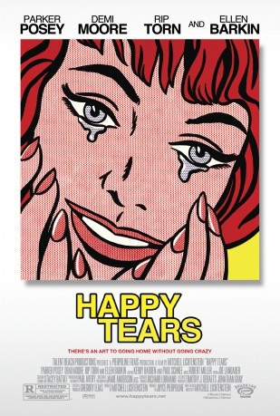
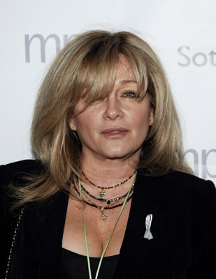

#7548 Mit glücklichen Tränen
Alternativ: Happy Tears
 
 IMDB-Wertung: 5.3 / 10
IMDB-Wertung: 5.3 / 10  Metascore: 0
Metascore: 0 
Jayne and Laura are about to take on the first man they just might not be able to handle: their seventy-something-year-old father Joe. Dutiful daughters returning to the house they grew up in, Jayne and Laura are forced to take a closer look at their own not-so-perfect lives while dodging childhood memories. Laura suspects that Joe needs full-time care, but Jayne hopes that their father's condition isn't that serious. Joe is still singing and playing his old guitar, and the lively widower even has a new "ladyfriend," shameless and sassy Shelly. But as the visible moments of their father's impending senility increase, so do the dysfunctional family dynamics. Tensions flare as the close sisters must also juggle their own very different lives - Laura's busy schedule as an environmentalist and mother of two small children, and Jayne, desperate to finally have a baby with her workaholic art-dealing husband Jackson. Their adventures back home are not without magic, mischief and mayhem, and ...
Jahr: 2009
Dauer: 95 Minuten
FSK: 12
Land: USA Studio: Roadside AttractionsTonspuren: DTS - ,
Untertitel:
Auflösung: 1080p (1920x1080) Größe: 6021 MB
Genre: Drama, Komödie
Regisseur: Mitchell Lichtenstein
Drehbuch: Mitchell Lichtenstein
Soundtrack:
Darsteller:
 Parker Posey als Jayne
Parker Posey als Jayne Demi Moore als Laura
Demi Moore als Laura- Peter Patrikios als Driver
- T. Ryder Smith als Shoe Salesman
 Christian Camargo als Jackson
Christian Camargo als Jackson Victor Slezak als Eli Bell
Victor Slezak als Eli Bell Rip Torn als Joe
Rip Torn als Joe Ellen Barkin als Shelly
Ellen Barkin als Shelly- Alyssa Klein als Young Laura
- David L. King als Dr. Sims
- Aldous Davidson als Waiter
- Richard Barlow als Mitch
 Billy Magnussen als Ray
Billy Magnussen als Ray Susan Blommaert als Mallory
Susan Blommaert als Mallory- Anderson Folsom als Young Ray
 Celia Weston als Neighbor
Celia Weston als Neighbor- Tom McNutt als Neighbor
- Marilyn Yoblick als Yard Sale Woman
 Roger Rees als Antiques Dealer
Roger Rees als Antiques Dealer Sebastian Roché als Laurent
Sebastian Roché als Laurent-  Patti D'Arbanville als Joe's Nurse
 Eve Gordon als TV Reporter
Eve Gordon als TV Reporter Jennifer Butler als Art Gallery Patron , uncredited
Jennifer Butler als Art Gallery Patron , uncredited- Arthur Byron als Sir Joseph Whemple , archive footage, uncredited
- Bramwell Fletcher als Ralph Norton , archive footage, uncredited
 Gina Hernandez als Red Hooker , uncredited
Gina Hernandez als Red Hooker , uncredited- Boris Karloff als Imhotep , archive footage, uncredited
- Kathy Nowrey als Prostitute , uncredited
 Vincent Riviezzo als Mental Patient , uncredited
Vincent Riviezzo als Mental Patient , uncredited- Melissa Ticen als Stewardess
- Julianna Conforti als Young Jayne
- Jacquelyn Conforti als Young Jayne
- Suzanne Inman als Nurse
- Benjamin Brandreth als Ben
- Mikey Iles als Mike
- Max Iles als Max
- Vale Anoai als Prostitute , uncredited
- Anthony C. Brown als Waiter #2 , uncredited
- Lee Burkett als Art Patron , uncredited
- Richard Graves als Art Gallery Patron , uncredited
- Shawnee Robertson als Restaurant Patron , uncredited
- David Adam Smith als Art Gallery Patron , uncredited
- Dan Van Wert als Art Gallery Patron , uncredited
- Kimberly Villanova als Prostitute , uncredited
Datei: X:\2009(G-M)\Mit glücklichen Tränen (2009, FSK12, 1920x1080).mkv seit 20.11.2017
Festplatte: HD 2009(G-Z)-2010(A-F)
 Es gibt insgesamt 82 Filme in der Gruppe '2009(G-M)'
Es gibt insgesamt 82 Filme in der Gruppe '2009(G-M)'